Exercicio 2d
%Reset do ambiente de trabalho close all; MarkovChainDraw();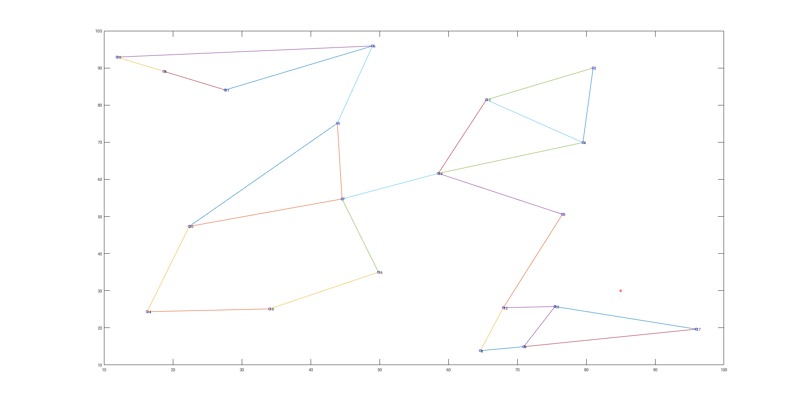
Comentarios: Observando o grafo e analisando os pesos a ele associado podemos concluir que existem certos subconjuntos onde o token circula durante mais tempo.
Estes conjuntos sao constituidos pelos seguintes agentes:
- Subconjunto 1 : Agentes 5, 6, 11 e 15
- Subconjunto 2 : Agentes 1, 7, 14, 16, 18, 20
- Subconjunto 3 : Agentes 2, 3, 4, 13, 19
- Subconjunto 4: Agentes 8, 9, 10, 12, 17
No subconjunto 1 a sa��da apenas pode ser efectuada atraves do no 6 no qual existe 80% de probabilidade de retencao contra 20% de probabilidade de saida.
No subconjunto 4 observa-se o mesmo problema do subconjunto 1 em que o token apenas pode sair do conjunto atraves do no 12 com 20% de saida contra 80% de retencao.
Nos subconjuntos 2 e 3 existe maior circulacao do token.
Se o token comecar num subconjunto propicio a manter o mesmo, o tempo de convergencia para as probabilidades de equilibrio sera maior pois nao existe um boa circulacao do token
Se o token comecar num subconjunto com maior fluidez de circulacao, o tempo de convergencia para as probabilidades de equilibrio sera menor.
% 2d i) close all; %Alteracao dos pesos das ligacoes de maneira a melhorar a situacao %- diminuicao dos pesos das ligacoes que formam os subgrupos onde o token passa mais tempo %- aumento dos pesos das ligacoes que formam os subgrupos onde o token passa menos tempo Pi = [ [1, 6, 0.3]; [1, 7, 0.35]; [1, 20, 0.35]; [3, 12, 0.5]; [3, 19, 0.5]; [6, 1, 0.3]; [6, 11, 0.35]; [6, 15, 0.35]; [12, 3, 0.3]; [12, 8, 0.35]; [12, 10, 0.35] ]; Pc = P; Pi_length = size(Pi, 1); %Alteracao da matriz de pesos dada for n=1:Pi_length Pc(Pi(n, 1), Pi(n, 2)) = Pi(n, 3); end %Calcula os vectores e valores proprios da matriz Pc transposta [v_c, u_c] = eig(Pc'); %Encontra o indice do valor proprio 1 [~, i_c] = min(abs(u_c(:) - 1)); i_c = mod(i_c, size(u_c, 1)); %Normaliza o vector v_c_norm = v_c(:, i_c) / sum(v_c(:, i_c)); figure; bar([v_norm, v_c_norm]); grid on; title('Probabilidades Limide da Cadeia de Markov'); xlabel('Estados'); ylabel('Probabilidade'); legend('v_{norm} original', 'v_{norm} melhor', 'Location', 'northeastoutside'); %Potencia da fonte Pw0 = 100; %Desvio padrao sig = 10^-2; %Numero de medidas M = 1000; No = round(v_c_norm.*M); a = zeros(sum(No), 2); k1 = 1; k2 = 0; %Cria observacoes para cada ancora for i=1:size(No) k2 = k2+No(i); a(k1:k2,:) = repmat([nodePos(i,2) nodePos(i, 3)], No(i), 1); k1 = k1 + No(i); end %Obtem a posicao da fonte x = sourcePos'; D = squareform(pdist([x zeros(size(x)) a']')); %Calcula distancia entre fonte e a ancora d = D(1, 3:end); %Calcula normas das acoras an = D(2, 3:end); %Calcula potencia nas ancoras sem ruido Pw = Pw0 ./ (d.^2); %Aplica ruido Pw = Pw.*exp(sig*rand(size(Pw))); QPw = 1e-2; %Quantitiza as potencias Pw = QPw*round(Pw/QPw); %Aplica metodo dos minimos quadrados A = [-2*repmat(Pw, [2 1]).*a'; -ones(size(Pw)); Pw]'; b = (-Pw.*(an.^2))'; z = A\b; xe = z(1:2); fprintf('Distancia entre posicao real e calculada da fonte (Melhorada): %f\n', norm(x-xe)); figure; plot(a*[1; 1i],'o', 'DisplayName', 'Ancoras'); hold all; grid on; plot(x'*[1; 1i],'x', 'DisplayName', 'Real'); plot(xe'*[1; 1i],'s', 'DisplayName', 'Calculada'); axis('square') title('Estimativa da posicao da fonte (Melhorada)'); legend('Location', 'northeastoutside'); % RLS formulation (one-shot) RlsPar = struct('lam',1); [e,w,RlsPar] = qrrls(A,b,RlsPar); fprintf('Erro da Recursive Least Squares (one-shot) (Melhorada): %f\n', norm(z-w)); % RLS formulation (incremental) RlsPar = struct('lam',1); for i = 1:size(A,1) [e,w,RlsPar] = qrrls(A(i,:),b(i),RlsPar); end fprintf('Erro da Recursive Least Squares (incremental) (Melhorada): %f\n', norm(z-w)); state = repmat([1:20], ttotal, 1); t = repmat(linspace(0, ttotal, ttotal), 20, 1); prob = zeros(20, ttotal); for n = 1:i_size+2 prob(:, 1) = prob0(:, n); for i = 2:ttotal prob(:, i) = prob(:, i-1)'*P; end figure; plot3(t', state, prob); xlabel('Tempo [s]'); ylabel('Estados'); zlabel('Probabilidades'); if(n <= i_size) title(sprintf('Evolucao das probabilidades para o estado inicial: %d', i_test(n))); elseif(n == i_size+1) title('Evolucao das probabilidades para distribuicao uniforme'); elseif(n == i_size+2) title('Evolucao das probabilidades para distribuicao de equilibrio'); end grid on; end
Distancia entre posicao real e calculada da fonte (Melhorada): 0.115780 Erro da Recursive Least Squares (one-shot) (Melhorada): 0.000158 Erro da Recursive Least Squares (incremental) (Melhorada): 0.000158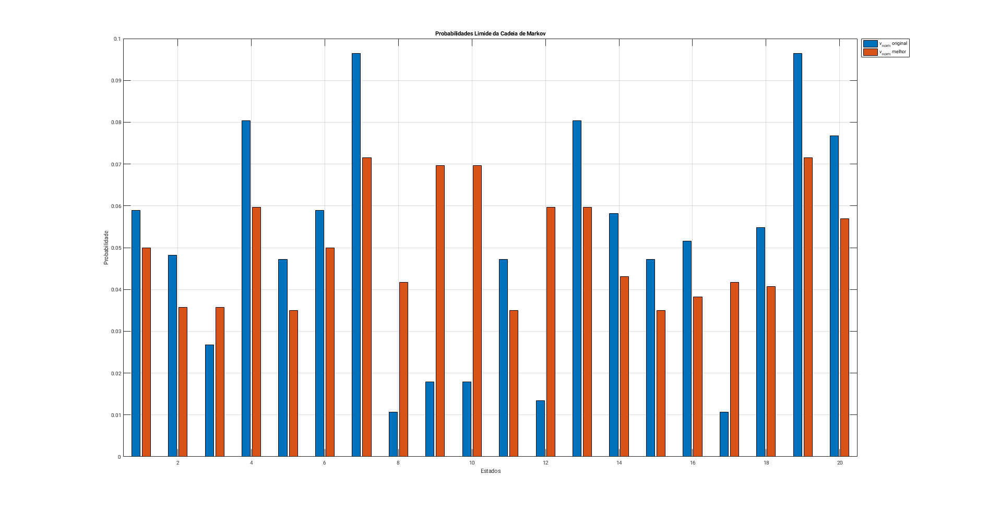 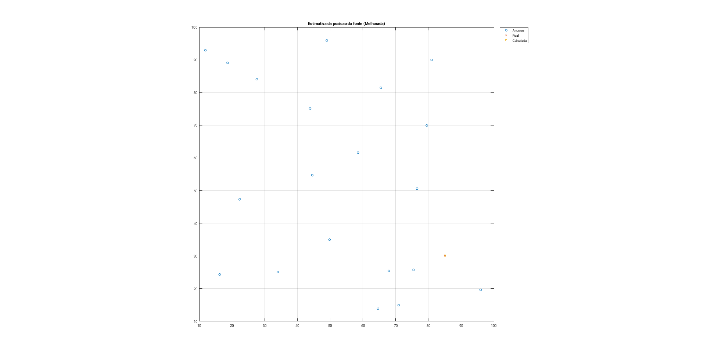 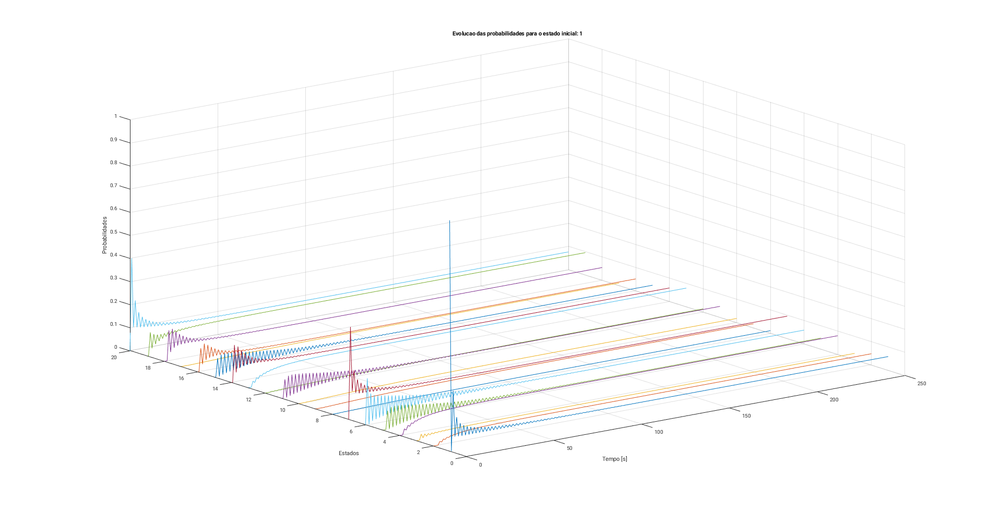 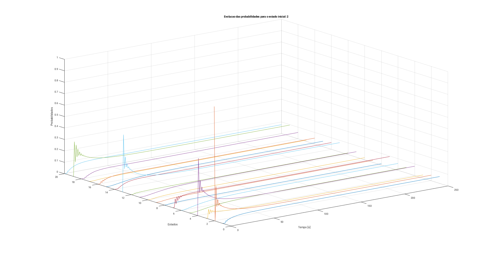
 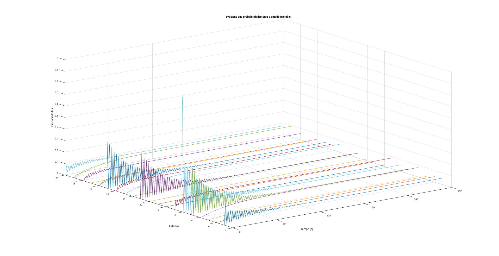 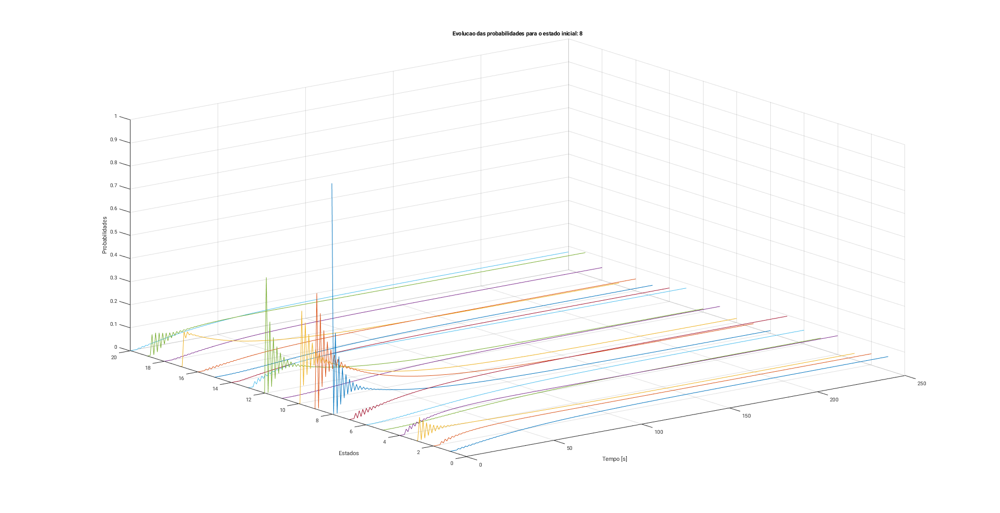 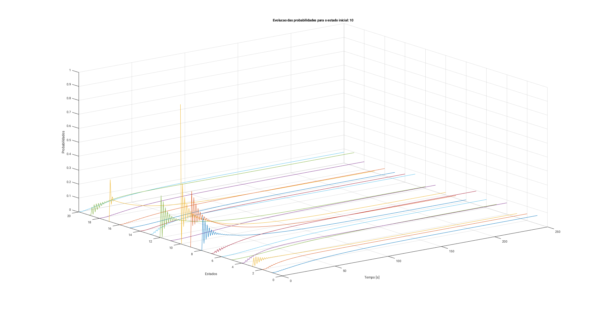 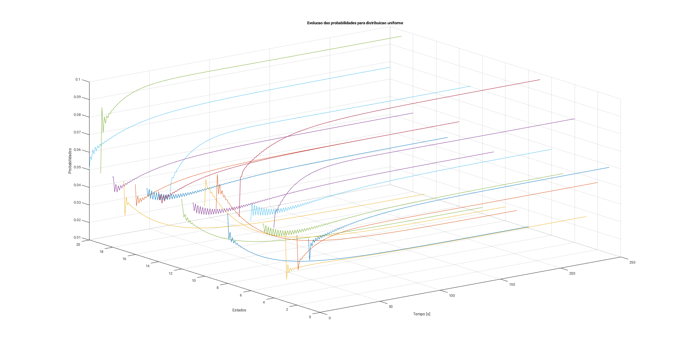 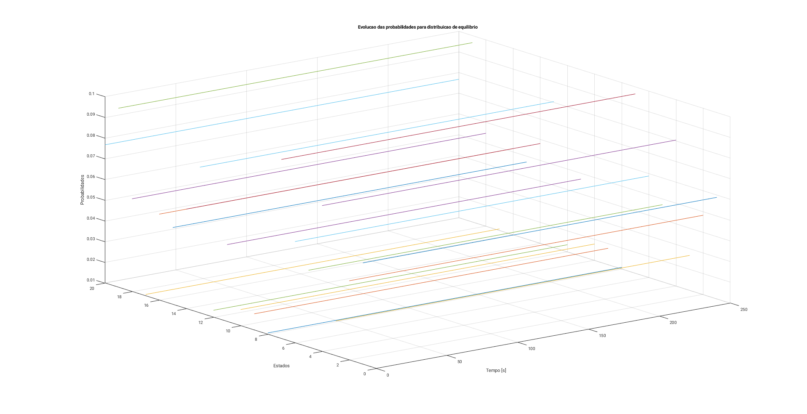
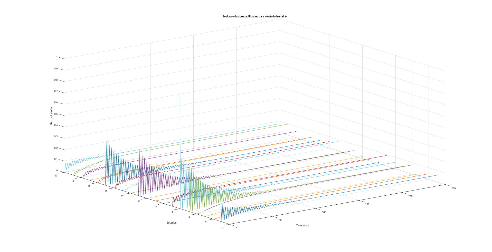 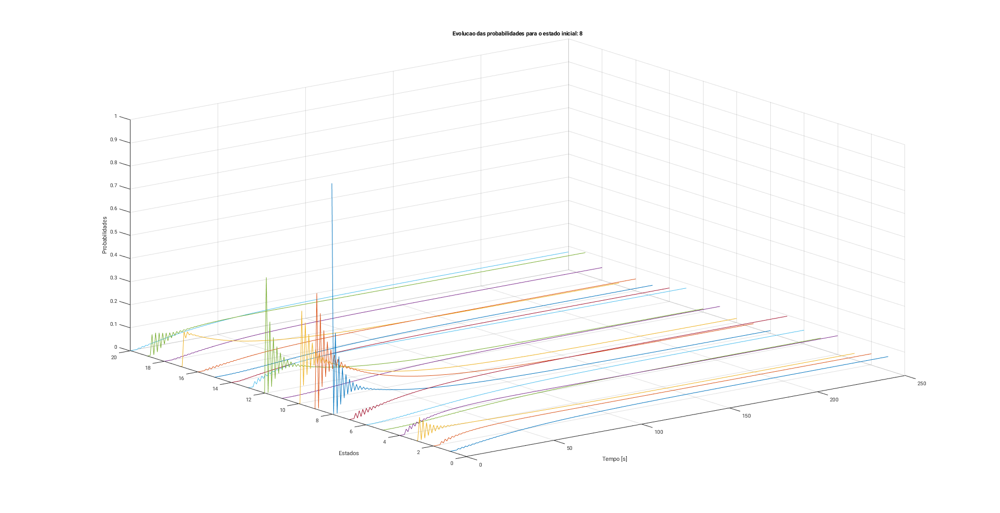 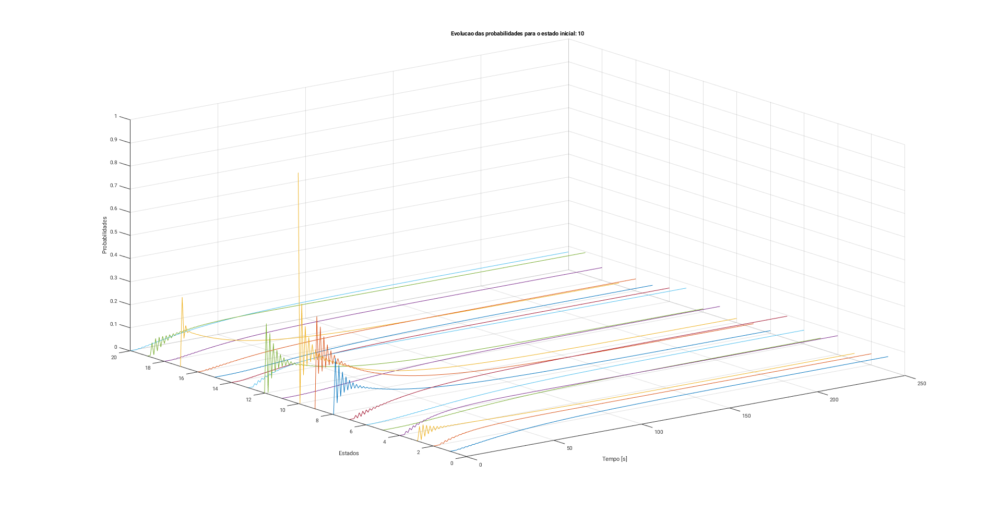 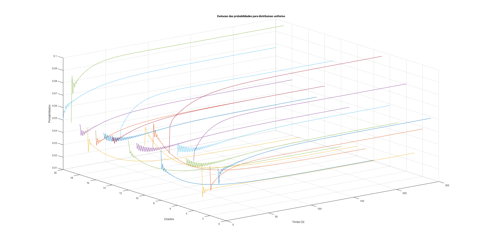 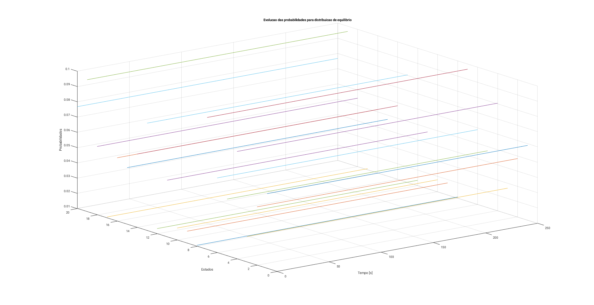 Comentarios: Verifica-se que uma maior fluidez de circulacao do token (caso Melhorado) leva a uma maior precisao na localizacao da fonte, isto deve-se a estimativa da mesma ter a contribuicao de cada um dos estados melhor distribuida e como tal mais medicoes diferentes levando entao a um calculo de posicao mais preciso.
Este resultado seria ainda melhor com mais testes, de modo a conseguir-se determinar a matriz P "ideal" (homegeneizacao perfeita das probabilidades).
% 2d ii) %Alteracao dos pesos das ligacoes de maneira a piorar a situacao %- eliminacao da ligacao (atraves de "jamming") com o subconjunto mais proximo da posicao real Pi = [ [3, 12, 0]; [3, 19, 1]; ]; Pc = P; Pi_length = size(Pi, 1); %Alteracao da matriz de pesos dada for n=1:Pi_length Pc(Pi(n, 1), Pi(n, 2)) = Pi(n, 3); end %Calcula os vectores e valores proprios da matriz Pc transposta [v_c, u_c] = eig(Pc'); %Encontra o indice do valor proprio 1 [~, i_c] = min(abs(u_c(:) - 1)); i_c = mod(i_c, size(u_c, 1)); %Normaliza o vector v_c_norm = v_c(:, i_c) / sum(v_c(:, i_c)); figure; bar([v_norm, v_c_norm]); grid on; title('Probabilidades Limide da Cadeia de Markov'); xlabel('Estados'); ylabel('Probabilidade'); legend('v_{norm} original', 'v_{norm} jammed', 'Location', 'northeastoutside'); %Potencia da fonte Pw0 = 100; %Desvio padrao sig = 10^-2; %Numero de medidas M = 1000; No = round(v_c_norm.*M); a = zeros(sum(No), 2); k1 = 1; k2 = 0; %Cria observacoes para cada ancora for i=1:size(No) k2 = k2+No(i); a(k1:k2,:) = repmat([nodePos(i,2) nodePos(i, 3)], No(i), 1); k1 = k1 + No(i); end %Obtem a posicao da fonte x = sourcePos'; D = squareform(pdist([x zeros(size(x)) a']')); %Calcula distancia entre fonte e a ancora d = D(1, 3:end); %Calcula normas das acoras an = D(2, 3:end); %Calcula potencia nas ancoras sem ruido Pw = Pw0 ./ (d.^2); %Aplica ruido Pw = Pw.*exp(sig*rand(size(Pw))); QPw = 1e-2; %Quantitiza as potencias Pw = QPw*round(Pw/QPw); %Aplica metodo dos minimos quadrados A = [-2*repmat(Pw, [2 1]).*a'; -ones(size(Pw)); Pw]'; b = (-Pw.*(an.^2))'; z = A\b; xe = z(1:2); fprintf('Distancia entre posicao real e calculada da fonte (Jammed): %f\n', norm(x-xe)); figure; plot(a*[1; 1i],'o', 'DisplayName', 'Ancoras'); hold all; grid on; plot(x'*[1; 1i],'x', 'DisplayName', 'Real'); plot(xe'*[1; 1i],'s', 'DisplayName', 'Calculada'); axis('square') title('Estimativa da posicao da fonte (Jammed)'); legend('Location', 'northeastoutside'); % RLS formulation (one-shot) RlsPar = struct('lam',1); [e,w,RlsPar] = qrrls(A,b,RlsPar); fprintf('Erro da Recursive Least Squares (one-shot) (Jammed): %f\n', norm(z-w)); % RLS formulation (incremental) RlsPar = struct('lam',1); for i = 1:size(A,1) [e,w,RlsPar] = qrrls(A(i,:),b(i),RlsPar); end fprintf('Erro da Recursive Least Squares (incremental) (Jammed): %f\n', norm(z-w)); state = repmat([1:20], ttotal, 1); t = repmat(linspace(0, ttotal, ttotal), 20, 1); prob = zeros(20, ttotal); for n = 1:i_size+2 prob(:, 1) = prob0(:, n); for i = 2:ttotal prob(:, i) = prob(:, i-1)'*P; end figure; plot3(t', state, prob); xlabel('Tempo [s]'); ylabel('Estados'); zlabel('Probabilidades'); if(n <= i_size) title(sprintf('Evolucao das probabilidades para o estado inicial: %d', i_test(n))); elseif(n == i_size+1) title('Evolucao das probabilidades para distribuicao uniforme'); elseif(n == i_size+2) title('Evolucao das probabilidades para distribuicao de equilibrio'); end grid on; end
Distancia entre posicao real e calculada da fonte (Jammed): 8.314807 Erro da Recursive Least Squares (one-shot) (Jammed): 0.001754 Erro da Recursive Least Squares (incremental) (Jammed): 0.001754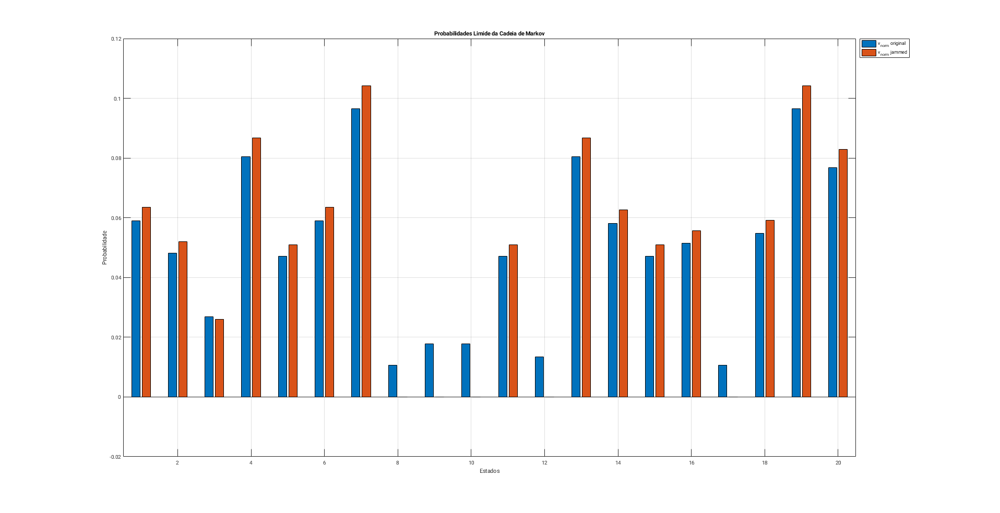 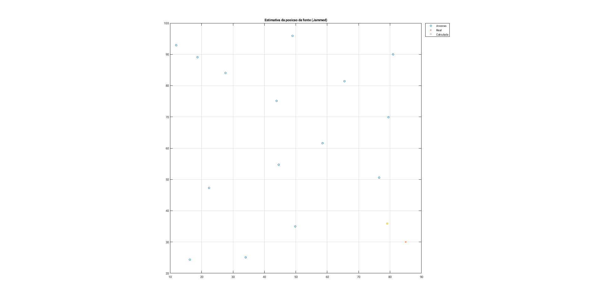 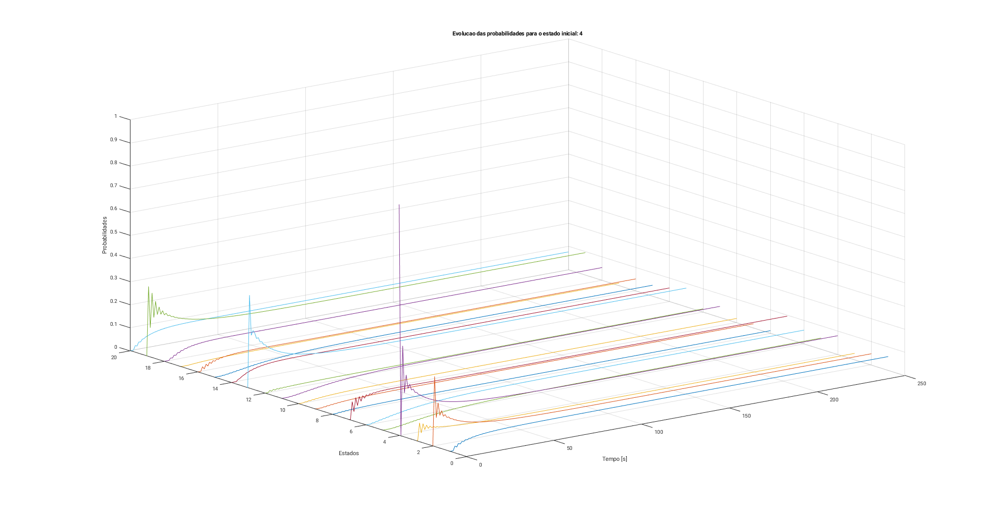